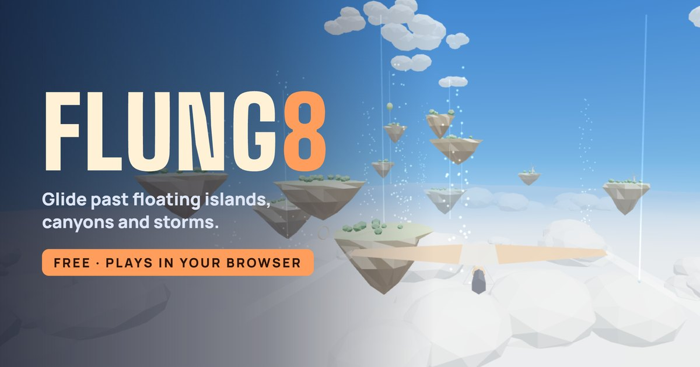

How to play Flung8
Flung8 is a free 3D glider game that runs in your browser. No download, no sign-up. Fly rings through 7 worlds, race other pilots live, or just glide around in Open Sky.

Keyboard controls
| W S | Dive / climb (you can swap these in Settings) |
| A D | Turn left / right |
| T | Switch steering: steep bank, free roll, sharp turn |
| Q E | Barrel roll left / right (hold) |
| Space | Boost (uses the boost bar) |
| Shift | Air brake, for tighter turns |
| C | Change camera |
| R | Back to the last ring |
| P | Photo mode |
| Esc | Pause |
Phone and tablet
Use the arrow buttons at the bottom left: left and right turn, up dives, down climbs. Hold BOOST and BRAKE on the right. CAM changes the camera and BACK returns you to the last ring.
Gamepad
Left stick steers. Right trigger or A boosts, left trigger brakes. Bumpers or the right stick do barrel rolls. Y changes camera, B goes back to the last ring, X opens photo mode and Start pauses.
How gliding works
Your glider has no engine. Diving turns height into speed, and climbing spends it. Fly too slow and the wing stalls and drops its nose. Thermals (columns of rising sparkles) and cyan lift rings give height back. Your boost bar refills from rings and thermals.
Style scores points: barrel rolls, loops, flying upside down, skimming the ground or the waves, near misses and power dives. Flying through rings in a row builds a multiplier.
Game modes
- Courses: fly through every ring as fast as you can and earn bronze, silver and gold medals.
- Open Sky: free flight with other pilots online, up to 8 per server.
- Race: race other pilots live through the same rings.
The 7 worlds and 14 courses
Each world has an easy Line course with wide rings and a hard Gauntlet course that is low, tight and fast.
- Cloud HarborFloating islands above the clouds. Mooring Line · Gull Gauntlet
- Ember CanyonRed desert canyons. Mesa Drift · Needle's Eye
- Frostwing PeaksSnowy mountains. Pinewind · Avalanche Run
- Lantern BaySunset coast. Harbor Lights · Reef Skimmer
- ThunderheadStorm clouds and lightning. Squall Line · Eye of the Storm
- Aurora FjordNight fjord under the northern lights. Northern Glide · Moonlit Chasm
- Sunken SpiresA green valley of stone pillars. Temple Weave · Thousand Pillars
Gliders, paint and coins
Earn coins by finishing runs, flying rings, doing tricks, daily challenges and levelling up. Spend them in the shop on new gliders, paints and trails. Every item can be bought; there is no real money in the game.